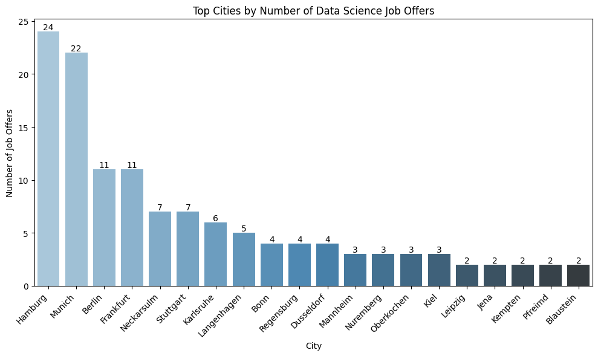

We map the jobs across Germany and give the reader the chance to explore them through an interactive map and table
Author
Flavia
Published
June 15, 2025
Here we build an interactive map and html table of data science jobs across Germany. We are using one of the job posting datasets that we collect weekly by using the Adzuna API through GitHub Actions. The full script is available on my GitHub Repository. We collected data science-related job postings in Germany by filtering:
Keyword = “data science”
country or region (e.g., “de”)
pages = 5
results_per_page = 100
Requirements
Code
# 📦 Core Librariesimport osfrom glob import globfrom datetime import datetimeimport timeimport astimport re# 🔢 Data Handling & Mathimport jsonimport numpy as npimport pandas as pd# 📊 Data Visualizationimport matplotlib.pyplot as pltimport seaborn as snsimport altair as altfrom IPython.display import display, HTMLfrom IPython.display import IFrame# 🗺️ Mapping, Geocoding & Clusteringfrom geopy.geocoders import Nominatimfrom geopy.exc import GeocoderTimedOutfrom sklearn.cluster import DBSCANimport foliumfrom folium.plugins import MarkerClusterfrom folium import IFrame
Code
# create folder to save the file for today's analysistoday = datetime.today().strftime('%Y-%m-%d')output_dir =f"output/{today}"os.makedirs(output_dir, exist_ok=True)
📁 Get the Data
We load the last data from Adzuna in the following steps:
Search for all CSV files in the data/ folder whose filenames start with “jobs_”, e.g., “jobs_2024-06-01.csv”.
Sort them in reverse (latest first).
Load the most recent one
Code
#print("Current directory:", os.getcwd())#print("Files in data folder:", os.listdir("data"))data_files =sorted(glob("data/jobs_*.csv"), reverse=True)if data_files: latest_file = data_files[0]print(f"Using latest file: {latest_file}")try:# Add defensive options df = pd.read_csv(latest_file, encoding='utf-8', engine='python', on_bad_lines='skip')print(f"Loaded DataFrame with {df.shape[0]} rows and {df.shape[1]} columns")exceptExceptionas e:print(f"Error reading CSV: {e}")withopen(latest_file, 'r') as f: lines = f.readlines()print("First 10 lines of file:")print(''.join(lines[:10]))raiseelse:raiseFileNotFoundError("No CSV files found in the data/ directory.")
Using latest file: data/jobs_2025-10-13.csv
Loaded DataFrame with 250 rows and 17 columns
🧹 Clean Data
Code
# Basic cleaning# function to clean up city names laterdef normalize_city_name(city):if pd.isna(city):return cityreturn re.sub(r"\s*\(.*?\)", "", city).strip()# extract display name from the location (contains city and state)def safe_extract_display_name(val):try: parsed = ast.literal_eval(val)return parsed.get("display_name")except:return val # If not a dict string, keep the raw string like "Dresden"df["location"] = df["location"].apply(lambda x: safe_extract_display_name(x) if pd.notna(x) elseNone)df["company"] = df["company"].apply(lambda x: safe_extract_display_name(x) if pd.notna(x) elseNone)df["title"] = df["title"].fillna("Unknown")# drop duplicates based on job title, company, and locationdf = df.drop_duplicates(subset=["title", "company", "location"])# Keep only needed columnscols_to_keep = ["id", "title", "company", "location", "latitude", "longitude", "created", "redirect_url"]df = df[cols_to_keep].copy()# Assign unique ID for merging laterdf = df.reset_index(drop=True)df["job_id"] = df.index
🌎 Get City Names by Using the Coordinates
Location descriptions can sometimes be imprecise or contain typos, or refer to smaller districts rather than the main city (for example, “Bilk” instead of “Düsseldorf”), which can cause errors in visualization. Instead of extracting all cities from the location description, we decided to use the coordinate provided in the dataset (when available) or calculate them.
For entries with coordinates: * We perform reverse geocoding on the coordinates to find the corresponding city names. * To avoid redundant API calls and speed up future runs, we implement a local cache stored in a JSON file.
For entries missing latitude or longitude: * We attempt to extract a city name from a string-based location field * We then geocode these city names to recover their latitude and longitude coordinates. * These recovered coordinates are merged back into the main DataFrame to fill missing values.
Code
# geocode city name from longitude and latitude and build chache# 🧭 Setup geolocatorgeolocator = Nominatim(user_agent="adzuna-geocoder")# Load cache file if exists, else create empty dictCACHE_FILE ="coord_to_city_cache.json"if os.path.exists(CACHE_FILE):withopen(CACHE_FILE, "r") as f: coord_to_city = json.load(f)else: coord_to_city = {}def get_city_from_coords(lat, lon, pause=1.1): key =f"{lat},{lon}"if key in coord_to_city:return coord_to_city[key]try: location = geolocator.reverse((lat, lon), exactly_one=True, language="en")if location isNone: city =Noneelse: address = location.raw.get("address", {}) city = ( address.get("city") or address.get("town") or address.get("village") or address.get("municipality") or address.get("county") or address.get("state") ) coord_to_city[key] = city time.sleep(pause)return cityexceptExceptionas e:print(f"Error reverse geocoding {lat}, {lon}: {e}")returnNone# Prepare unique coordinates from dfdf_coords = df.dropna(subset=["latitude", "longitude"]).copy()unique_coords = df_coords[["latitude", "longitude"]].drop_duplicates()# Reverse geocode with cachingfor _, row in unique_coords.iterrows(): lat, lon = row["latitude"], row["longitude"] get_city_from_coords(lat, lon)# Assign city names back to df_coords using the cachedf_coords["city"] = df_coords.apply(lambda r: coord_to_city.get(f"{r['latitude']},{r['longitude']}"), axis=1)# normalize city namesdf_coords["city"] = df_coords["city"].apply(normalize_city_name)# Save cache to disk for next runswithopen(CACHE_FILE, "w") as f: json.dump(coord_to_city, f)
Error reverse geocoding 49.01336, 8.38979: HTTPSConnectionPool(host='nominatim.openstreetmap.org', port=443): Max retries exceeded with url: /reverse?lat=49.01336&lon=8.38979&format=json&accept-language=en&addressdetails=1 (Caused by ReadTimeoutError("HTTPSConnectionPool(host='nominatim.openstreetmap.org', port=443): Read timed out. (read timeout=1)"))
Code
# 🧭 Geocode missing coordinates from location stringdef extract_city_from_location(location):if pd.isna(location):returnNoneifisinstance(location, str):try: location_dict = ast.literal_eval(location) area = location_dict.get("area", [])ifisinstance(area, list) and area:return area[-1]exceptException:pass match = re.search(r"\b([A-ZÄÖÜ][a-zäöüßA-ZÄÖÜ-]+)", location)if match:return match.group(1)returnNonemissing_coords = df[df["latitude"].isna() | df["longitude"].isna()].copy()missing_coords["recovered_city"] = missing_coords["location"].apply(extract_city_from_location)# normalize city namesmissing_coords["recovered_city"] = missing_coords["recovered_city"].apply(normalize_city_name)# Filter out entries that are too broadvalid_city_mask = missing_coords["recovered_city"].notna() & (missing_coords["recovered_city"].str.lower() !="deutschland")to_geocode = missing_coords[valid_city_mask].copy()def geocode_city(city):try:if pd.isna(city):return (None, None) location = geolocator.geocode(f"{city}, Germany")if location:return (location.latitude, location.longitude)except GeocoderTimedOut: time.sleep(1)return geocode_city(city) # retry onceexceptException:return (None, None)return (None, None)coords_df = to_geocode["recovered_city"].apply(lambda city: pd.Series(geocode_city(city)))coords_df.columns = ["latitude_recovered", "longitude_recovered"]to_geocode = to_geocode.reset_index(drop=True)to_geocode = pd.concat([to_geocode, coords_df], axis=1)to_geocode["job_id"] = to_geocode.index# Drop previously added columns if they exist (avoid merge errors)df = df.drop(columns=["latitude_recovered", "longitude_recovered"], errors="ignore")# Merge recovered coordinates back into the main DataFramedf = df.merge(to_geocode[["job_id", "latitude_recovered", "longitude_recovered"]], on="job_id", how="left")# Fill missing lat/lon with recovered valuesdf["latitude"] = df["latitude"].fillna(df["latitude_recovered"])df["longitude"] = df["longitude"].fillna(df["longitude_recovered"])# Final cleanupdf = df.drop(columns=["latitude_recovered", "longitude_recovered"])
🔝 Top Cities for Job Offers
Code
## Top 20 Cities for Job Offerstop_cities = df_coords["city"].value_counts().head(20).reset_index() # get top 20top_cities.columns = ["city", "count"]plt.figure(figsize=(10, 6))ax = sns.barplot(data=top_cities, x="city", y="count", palette="Blues_d", hue="city", legend=False)# Add annotationsfor i, row in top_cities.iterrows(): ax.text(i, row["count"], str(row["count"]), ha='center', va='bottom', fontsize=10)plt.title("Top Cities by Number of Data Science Job Offers")plt.xticks(rotation=45, ha="right")plt.xlabel("City")plt.ylabel("Number of Job Offers")plt.tight_layout()plt.tight_layout()# ✅ Save BEFORE showplt.savefig(f"{output_dir}/top_cities.png", bbox_inches='tight')# show#plt.show()

🗺️ Mapping Job Clusters and Top Hiring Companies in Germany
To visualize where data science jobs are concentrated across Germany, we used the geographical coordinates provided in the dataset (latitude and longitude) and applied the algorithm DBSCAN to create clusters. This allowed us to group nearby job postings within a 10 km radius into location-based clusters.
For each cluster, we:
Calculated the average coordinates to place a marker on the map.
Counted the number of job postings and identified the top 10 hiring companies in each cluster.
We then used the Folium library to create an interactive map. Each marker on the map displays:
The name of the city (based on the reverse-geocoded coordinates)
The top companies hiring in that location
The number of job postings per company (e.g., “Company XYZ (3)”)
This approach helps identify regional hiring trends and hotspots for data science roles in Germany.
Code
# Run DBSCAN clustering# since DBSCAN needs the eps in radians, not kilometers and Earth's radius is approximately 6371 km# we divide 10 km by that value to convert it to radians.# Run DBSCAN clusteringcoords = df_coords[['latitude', 'longitude']].valueskms_per_radian =6371.0088epsilon =10/ kms_per_radian # 10 km radius in radiansdb = DBSCAN(eps=epsilon, min_samples=1, algorithm='ball_tree', metric='haversine')df_coords['cluster'] = db.fit_predict(np.radians(coords))# Assign representative city name to each cluster (city with most jobs)cluster_names = ( df_coords.groupby('cluster')['city'] .agg(lambda x: x.mode().iloc[0] ifnot x.mode().empty else x.iloc[0]) .reset_index())df_coords = df_coords.merge(cluster_names, on='cluster', suffixes=('', '_clustered'))df_coords['city'] = df_coords['city_clustered']df_coords.drop(columns='city_clustered', inplace=True)df_coords = df_coords.drop(columns='cluster_city', errors='ignore') # if it existed# Summarize clusters with mean coordinates and job countscluster_summary = ( df_coords.groupby(['cluster', 'city']) .agg({'latitude': 'mean','longitude': 'mean','title': 'count' }) .reset_index() .rename(columns={'title': 'job_count'}))# Prepare top companies per cluster (for popup info)top_companies_per_cluster = ( df_coords.groupby(['cluster', 'company']) .size() .reset_index(name='job_count') .sort_values(['cluster', 'job_count'], ascending=[True, False]) .groupby('cluster', group_keys=False) .head(10))popup_data = top_companies_per_cluster.merge( cluster_summary[['cluster', 'city', 'latitude', 'longitude']], on='cluster')# Create map with company popupsmap_center = [51.1657, 10.4515] # Germany centercompany_map = folium.Map(location=map_center, zoom_start=6)marker_cluster = MarkerCluster().add_to(company_map)for cluster_id, group in popup_data.groupby('cluster'): city = group['city'].iloc[0] lat = group['latitude'].iloc[0] lon = group['longitude'].iloc[0] companies_html ='<br>'.join(f"{row['company']} ({row['job_count']})"for _, row in group.iterrows() ) html =f""" <h4>{city}</h4> <div style="font-family: Arial; font-size: 12px;">{companies_html} </div> """ iframe = IFrame(html=html, width=300, height=150) popup = folium.Popup(iframe, max_width=300) folium.Marker( location=[lat, lon], popup=popup, tooltip=city ).add_to(marker_cluster)# Save the interactive map as an HTML file (make sure folder exists)company_map.save(f"{output_dir}/company_map.html")# Optional: display the note in the notebook (commented out to keep notebook light)# display(HTML("""# <p style="font-family: Arial; font-size: 14px; margin-top: 10px;"># <b>Note:</b> The numbers on the map markers represent how many job locations are clustered together in that area.# Zoom in to explore individual job locations and click on them to view the top hiring companies in that region# and the number of jobs per each company. The city names are in English!# </p># """))
📊 Interactive Company & Job Title Chart per City
Code
# Aggregate job datatable_data = ( df_coords .groupby(['city', 'company']) .agg( job_titles=('title', list), job_links=('redirect_url', list), job_dates=('created', list), latest_date=('created', lambda dates: max(pd.to_datetime(dates))) # For sorting ) .reset_index())# Format job titles + links + dates into HTML and sort by published datedef format_job_entry(title, link, date): raw_date = pd.to_datetime(date) display_date = raw_date.strftime('%d-%m-%Y') # EU formatreturn (f"{title}<br>"f"<a href='{link}' target='_blank'>🔗 Link</a><br>"f"<em>date: {display_date}</em>" )table_data['jobs'] = table_data.apply(lambda row: '<br><br>'.join( format_job_entry(t, l, d)for t, l, d inzip(row['job_titles'], row['job_links'], row['job_dates']) ), axis=1)# Step 3: Final table with renamed columns (include SortDate as hidden column)table_data_display = table_data[['city', 'company', 'jobs', 'latest_date']].rename(columns={'city': 'City','company': 'Company','jobs': 'Job Offers','latest_date': 'SortDate'})# Fix date format for sortingtable_data['latest_date'] = pd.to_datetime(table_data['latest_date']).dt.strftime('%Y-%m-%d')# Final table with sorting columntable_data_display = table_data[['city', 'company', 'jobs', 'latest_date']].rename(columns={'city': 'City','company': 'Company','jobs': 'Job Offers','latest_date': 'SortDate'})# HTML tablehtml_table = table_data_display.to_html( escape=False, index=False, classes='display', table_id='jobTable')# HTML Templatehtml_template =f"""<html><head><meta charset="utf-8"><title>Job Offers Interactive Table</title><link rel="stylesheet" type="text/css" href="https://cdn.datatables.net/1.13.6/css/jquery.dataTables.css"><script src="https://code.jquery.com/jquery-3.7.0.js"></script><script src="https://cdn.datatables.net/1.13.6/js/jquery.dataTables.js"></script><style> body {{ font-family: 'Segoe UI', Tahoma, Geneva, Verdana, sans-serif; background-color: #fafafa; padding: 20px;}} h2 {{ color: #333;}} p {{ margin-bottom: 10px; font-size: 0.95em; color: #555;}} #cityFilter {{ margin-bottom: 20px; font-size: 1em;}} table.dataTable {{ border-collapse: collapse !important; width: 100%; background-color: white; overflow: hidden; box-shadow: 0 2px 10px rgba(0,0,0,0.05);}} table.dataTable thead {{ background-color: #333; color: white;}} table.dataTable th, table.dataTable td {{ padding: 10px; text-align: left; vertical-align: top; white-space: normal;}} table.dataTable tbody tr:nth-child(odd) {{ background-color: #f9f9f9;}} table.dataTable tbody tr:hover {{ background-color: #eef2f7; transition: background-color 0.2s ease;}} a {{ color: #1a73e8; text-decoration: none;}} a:hover {{ text-decoration: underline;}}</style></head><body><h2>Data Science Job Offers by City and Company</h2><p>Use the dropdown to filter by city or the search box to filter by keywords. Click the 🔗 link to view or apply for a job.</p><label for="cityFilter"><strong>Filter by City:</strong></label><select id="cityFilter"> <option value="">All Cities</option></select>{html_table}<script>$(document).ready(function() {{ var table = $('#jobTable').DataTable({{ "pageLength": 10, "lengthMenu": [5, 10, 20, 50], "order": [[3, 'desc']], "columnDefs": [{{ "targets": 3, "visible": false, "searchable": false}} ]}}); // Populate City filter dropdown var uniqueCities = table.column(0).data().unique().sort(); uniqueCities.toArray().forEach(function(city) {{ $('#cityFilter').append(`<option value="${{city}}">${{city}}</option>`);}}); // Filter table by selected city $('#cityFilter').on('change', function() {{ var selected = $(this).val(); if (selected) {{ table.column(0).search('^' + selected + '$', true, false).draw();}} else {{ table.column(0).search('').draw();}}}});}});</script></body></html>"""
Code
# save interactive table for allowing display on my quarto blogwithopen(f"{output_dir}/interactive_job_table.html", "w", encoding="utf-8") as f: f.write(html_template)
Code
from IPython.display import IFrame# display#IFrame(f"{output_dir}/interactive_job_table.html", width='90%', height=600)